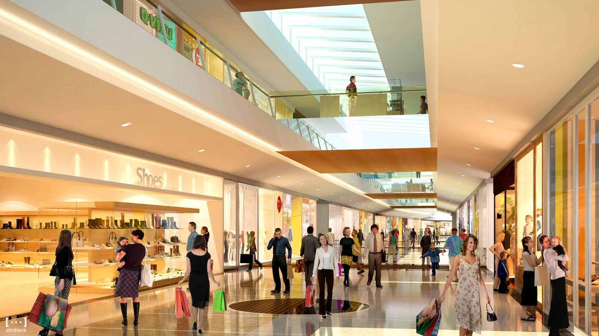

A nossa Especialidade: Fornecimento de equipes de lojas

Nosso diferencial está no atendimento personalizado para expansão de lojas próprias e franquias.
Atendemos a contratação pontual ou em larga escala (em todo território nacional) com qualidade e de forma personalizada para cada processo.
Nosso hunting é 100% focado em profissionais com experiência em lojas e em cada segmento específico.
Onde atuamos